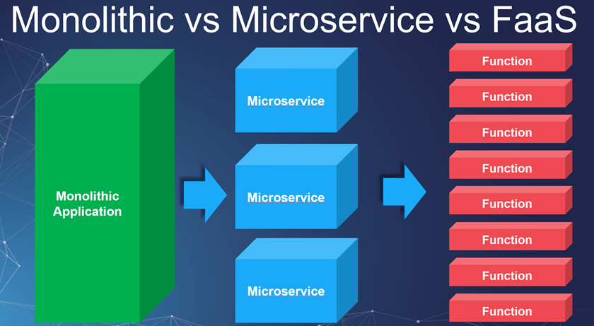
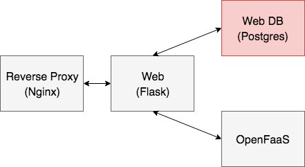
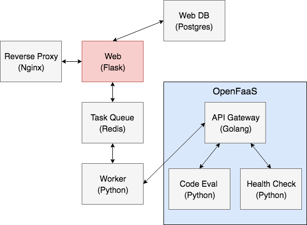
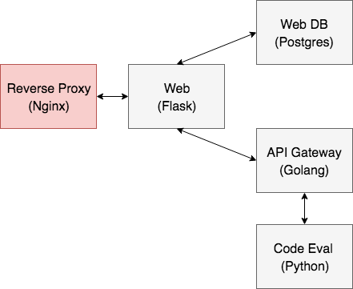

class: center, middle # Going Serverless with OpenFaaS,<br>Kubernetes, and Python <div style="text-align:center;"> <img src="images/openfaas.png" style="max-width: 25%; border:0; box-shadow: none;" alt="openfaas"> </div> <br> <div> <span style="vertical-align:60%;">Presented by <em>Michael Herman</em> at</span> </div> --- ### Agenda (part 1) ⏱ ~ 1 hour -- ##### (1) Intro 1. About Me 1. Objectives 1. Serverless, FaaS, and OpenFaaS 1. Architecture 1. Project Setup 1. Why Microservices? -- ##### (2) Web App 1. Python/Flask 1. Postgres 1. Nginx ##### (3) OpenFaaS 1. foo 1. bar --- ### Agenda (part 2) ⏱ ~ 2 hours -- ##### (4) Deployment 1. Container Orchestration 1. Kubernetes 1. Digital Ocean Setup 1. Deploying Each Service 1. Workflow -- ##### (5) Goodbye 1. Next Steps 1. Questions --- ### About Michael ``` $ whoami michael.herman ``` -- #### Day Job: Software Engineer at [ClickFox](https://www.clickfox.com/). <img src="images/clickfox.png" style="max-width: 4%; border:0; box-shadow: none;" alt="clickfox logo"> -- #### Docker: 1. Avid Docker user since 2014. 1. Last year I architected and set up [On-Demand Environments With Docker and AWS ECS](http://mherman.org/blog/2017/09/18/on-demand-test-environments-with-docker-and-aws-ecs/). -- #### Also: 1. Co-founder/author of [Real Python](https://realpython.com) 1. 😍 - [tech writing/education](http://mherman.org), [open source](http://github.com/mjhea0), [financial models](http://www.starterfinancialmodel.com/), [radiohead](http://radiohead.com/) <img src="images/me.png" style="max-width: 10%; border:0; box-shadow: none; padding-top:10px" alt="me"> --- ### Objectives By the end of this talk, you should be able to... -- `Containerization` 1. Configure and run **microservices** locally with Docker 1. Utilize **volumes** to mount code into a container to enable **hot reload** 1. Run unit and integration **tests** inside a Docker container -- `Orchestration` 1. Explain what **container orchestration** is and why you may need to incorporate an orchestration tool into your deployment process 1. Discuss the pros and cons of using Kubernetes over other **orchestration tools** like Elastic Container Service (ECS), Mesos, and Docker Swarm 1. Integrate **Docker Hub** into the deployment process --- ### TestDriven.io Much of this tutorial comes from the following course I wrote at [Testdriven.io](http://testdriven.io/)... <br> <div class="grid"> <div style="float: left; width: 45%;"> <div text-align="center"> <img src="images/cover_small.png" style="max-width: 80%; border:2px solid; border-color:grey; box-shadow: none;" alt="microservice tech"> </div> </div> <div style="float: left; width: 55%;"> <h4 style="margin-top: 0;"><em>Microservices with Docker, Flask, and React</em></h4> <p>Along with learning how to build a number of Python-based microservices, you'll also be introduced to more advanced topics like:</p> <ul> <li>Test-driven Development (TDD)</li> <li>AWS ECS, RDS, and Lambda</li> <li>React</li> <li>Blue/Green Deploys</li> <li>CI/CD</li> </ul> </div> </div> <div class="center"> <img src="images/mobile_image.png" style="max-width: 15%; padding-top:30px; box-shadow: none;" alt="testdriven.io"> </div> --- ### Architecture -- **Web App:** | Name | Container | Tech | |-----------|-------------|---------------------| | Web | `web` | Flask, gunicorn | | Web DB | `web-db` | Postgres | | Nginx | `nginx` | Nginx | **OpenFaas Back-end:** 1. foo 1. bar --- ### Serverless, FaaS, and OpenFaaS -- **Serverless**: Serverless is a cloud computing execution model that abstracts away much of the complexity associated with server management (implementing, provisioning, tweaking, scaling) from developers. Pricing models are generally based on actual resources consumed. -- **Functions as a Service (FaaS)**: FaaS is a serverless model that enables developers to run modular, stateless pieces of code in response to events (like HTTP requests). -- <div>  </div> <p style="margin-top:0;"><small>(<a href="http://lukeangel.co/cross-platform/docker-servless-faas-functions-as-a-service/">Source</a>)</small></p> --- ### Serverless, FaaS, and OpenFaaS (continued...) **Question: How does FaaS differ from the PaaS model?** -- 1. *PaaS* - Applications typically run on the server at all times. 1. *FaaS* - Functions run as needed. When needed, the functions take a few milliseconds to start and then they are shut down after execution. -- **Examples of FaaS:** 1. [AWS Lambda](https://aws.amazon.com/lambda/) 1. [Google Cloud Functions](https://cloud.google.com/functions/) 1. [Microsoft Azure Functions](https://azure.microsoft.com/en-us/services/functions/) <div> </div> -- **FaaS Advantages**: 1. *Increased velocity* (infrastructure is managed by someone else) 1. *Scalability, availabiliity, and fault tolerance comes out of the box* 1. *Decreased costs* (no idle resources) --- ### Serverless, FaaS, and OpenFaaS (continued...) -- **FaaS Disadvantages**: 1. *Decreased transparency* (infrastructure is managed by someone else) 1. *Debugging* (remote debugging sucks) 1. *Confusion* (lots of moving pieces) 1. *Restrictions* (i.e., AWS Lambda functions only support certain languages and functions can only run for 5 minutes) 1. *Vendor lock-in* -- **OpenFaaS**: [OpenFaaS](https://www.openfaas.com/) is a framework for building serverless functions on top of containers. It helps to mitigate many of the above disadvantages. You can run serverless functions: 1. In whatever language you want 1. For however long you need 1. Wherever you want <div> <img src="images/openfaas_full_logo.png" style="max-width: 25%; border:0; box-shadow: none;" alt="openfaas"> </div> https://blog.alexellis.io/introducing-functions-as-a-service/ --- ### Project Setup -- Fire up the app locally: ```sh $ git clone https://github.com/testdrivenio/flask-openfaas \ --branch pycon --single-branch $ cd flask-openfaas $ docker-compose up -d --build ``` <small><em><strong>NOTE:</strong> Using Docker Machine? Replace `localhost` above with `DOCKER_MACHINE_IP`.</em></small> -- #### Docker Compose An orchestration tool for running multi-container apps. *Often, when developing applications with a microservice architecture, you cannot fully test out all services until you deploy to a staging server. This takes much too long to get feedback. Docker helps to speed up this process by making it easier to link together small, independent services locally.* Docker 101: http://mherman.org/docker-workshop <img src="images/docker-compose.png" alt="docker compose logo" style="width:50px;"> --- ### Why Microservices? -- **Pros** 1. *Separation of Concerns*: different apps can have different code bases and dependencies, localized errors, less coupling can lead to easier scaling 1. *Smaller Code Bases*: without having to grasp the entire system, it's often easier to understand the code base -- **Cons** 1. *Design Complexity*: microservices are complex, start with modules 1. *Network Complexity*: many helper functions become AJAX calls, ping-pong-like effect in terms of network requests, network lag 1. *Data Persistence*: managing state (DBs, queues, service discovery) is hard 1. *Security*: more surface area = more areas prone to attack 1. *Integration Tests*: testing is hard, especially if you try to test like you'd test a monolith -- <img src="images/microservices.png" style="max-width: 7%; border:0; box-shadow: none;" alt="microservice"> You need - *Strong communication + docs, mature devops, lots of planning* <small class="center">!!! More on microservices: https://testdriven.io/part-one-microservices !!!</small> --- class: center, middle ## Web App --- ### Web DB <div>  </div> --- ### Web DB https://github.com/testdrivenio/flask-openfaas/tree/pycon/services/db #### Steps: 1. Review *[Dockerfile](https://github.com/testdrivenio/flask-openfaas/blob/pycon/services/db/Dockerfile)* and *[docker-compose.yml](https://github.com/testdrivenio/flask-openfaas/blob/pycon/docker-compose.yml)* 1. Build image, run container: ```sh $ docker-compose up -d --build users-db ``` 1. Test/Sanity Check: ```sh $ docker exec -ti web-db psql -U postgres -W ``` <div> <img src="images/postgres.png" style="max-width: 20%; border:0; box-shadow: none;" alt="postgres logo"> </div> --- ### Web <div>  </div> --- ### Web https://github.com/testdrivenio/flask-openfaas/tree/master/services/web #### Steps: 1. Review the [code](https://github.com/testdrivenio/flask-openfaas/tree/master/services/web), *[Dockerfile](https://github.com/testdrivenio/flask-openfaas/blob/master/services/web/Dockerfile)*, and *[docker-compose.yml](https://github.com/testdrivenio/flask-openfaas/blob/master/docker-compose.yml)* 1. Build image, run container: ```sh $ docker-compose -f docker-compose.yml up -d --build users ``` 1. Test/Sanity Check: ```sh # create and seed the db $ docker-compose run web python manage.py create_db $ docker-compose run web python manage.py create_data # run unit and integration tests $ docker-compose run web python manage.py test ``` Navigate to [http://localhost:5002](http://localhost:5002) in your browser. <div> <img src="images/flask.png" style="max-width: 5%; border:0; box-shadow: none;" alt="flask logo"> </div> --- ### Nginx <div>  </div> --- ### Nginx https://github.com/testdrivenio/flask-openfaas/tree/pycon/services/nginx #### Steps: 1. Review the [code](https://github.com/testdrivenio/flask-openfaas/tree/pycon/services/nginx), *[Dockerfile](https://github.com/testdrivenio/flask-openfaas/blob/pycon/services/nginx/Dockerfile)*, and *[docker-compose.yml](https://github.com/testdrivenio/flask-openfaas/blob/master/docker-compose.yml)* 1. Build image, run container: ```sh $ docker-compose up -d --build nginx ``` 1. Test/Sanity Check: navigate to [http://localhost](http://localhost) <br> <div> <img src="images/nginx.png" style="max-width: 20%; border:0; box-shadow: none;" alt="nginx logo"> </div> --- ### End-to-End Tests <div> <img src="images/testdriven-e2e.png" style="max-width:100%; border:0; box-shadow: none;" alt="testdriven-e2e"> </div> --- ### Docker Machine -- Assuming you already have an AWS account [setup](http://docs.aws.amazon.com/AWSEC2/latest/UserGuide/get-set-up-for-amazon-ec2.html) along with [IAM](https://aws.amazon.com/iam/) and your AWS credentials are stored in an *~/.aws/credentials* file, create a new host on an EC2 instance: ```sh $ docker-machine create --driver amazonec2 pytn ``` -- Once done, set it as the active host and point the Docker client at it: ```sh $ docker-machine env pytn $ eval $(docker-machine env pytn) ``` -- Grab the IP address associated with the new EC2 instance and use it to set the `REACT_APP_USERS_SERVICE_URL` environment variable: ```sh $ docker-machine ip pytn $ export REACT_APP_USERS_SERVICE_URL=http://DOCKER_MACHINE_IP ``` <small><em><strong>NOTE:</strong> The `REACT_APP_USERS_SERVICE_URL` environment variable must be set at the build-time, so it is available *before* we kick off Create React App's production build process.</em></small> --- ### EC2 Deployment -- Set the secret key: ```sh $ export SECRET_KEY=my_precious ``` -- Build the images, spin up the containers: ```sh $ docker-compose -f docker-compose-prod.yml up -d --build ``` -- Create and seed the database: ```sh $ docker-compose -f docker-compose-prod.yml \ run users python manage.py recreate_db $ docker-compose -f docker-compose-prod.yml run users python manage.py seed_db ``` -- Update the `TEST_URL` environment variable and then run the e2e tests: ```sh $ testcafe chrome e2e ``` <div> <img src="images/aws.png" style="max-width: 12%; padding-top:20px; box-shadow: none;" alt="aws logo"> </div> <small>For more, review https://docs.docker.com/machine/examples/aws/.</small> --- class: center, middle ## Orchestration --- ### What is Container Orchestration? -- As you move from deploying containers on a single machine to deploying them across a number of machines, you need an orchestration tool to manage the arrangement and coordination of the containers across the entire system. -- This is where [ECS](https://aws.amazon.com/ecs/) fits in along with a number of other orchestration tools - like [Kubernetes](https://kubernetes.io/), [Mesos](http://mesos.apache.org/), and [Docker Swarm](https://docs.docker.com/engine/swarm/). -- <br><br> Which one? <div> <img src="images/kubernetes-vs-docker-swarm-vs-mesos.png" style="max-width: 40%; border:0; box-shadow: none;" alt="kubernetes vs docker swarm vs mesos"> </div> --- ### Why ECS? -- ECS is simpler to set up and easier to use and you have the full power of AWS behind it, so you can easily integrate it into other AWS services (which we will be doing shortly). **In short, you get *scheduling*, *service discovery*, *load balancing*, and *auto-scaling* out-of-the-box. Plus, you can take full advantage of EC2’s multiple *availability-zones*.** -- If you’re already on AWS and have no desire to leave, then it makes sense to use AWS. -- Keep in mind, that ECS is often lagging behind Kubernetes, in terms of features, though. If you’re looking for the most features and portability and you don’t mind installing and managing the tool, then Kubernetes, Docker Swarm, or Mesos may be right for you. -- One last thing to take note of is that since ECS is closed-source, there isn’t a true way to run an environment locally in order to achieve development-to-production parity. ([LocalStack](https://github.com/localstack/localstack)?) <br> <small><em>Awesome comparison resource -> https://blog.kublr.com/choosing-the-right-containerization-and-cluster-management-tool-fdfcec5700df</em></small> --- ### Orchestration Feature Wish-list Most orchestration tools come with a core set of features. You can find those features below along with the associated AWS service... <div> <img src="images/features.png" style="max-width: 67%; border:0; box-shadow: none;" alt="orchestration features"> </div> <small><em>We'll either cover the features with a ✔️ directly or you'll see them in action from the demo.</em></small> --- ### Elastic Load Balancing (part 1) The Elastic Load Balancer distributes incoming application traffic and scales resources as needed to meet traffic needs. -- It's one of (if not) the most important parts of your applications since it needs to always be up, routing traffic to healthy back-ends, and ready to scale at a moment’s notice. -- ##### (1) Application Load Balancer There are currently three types of Elastic Load Balancers to choose from. We’ll be using the Application Load Balancer since it provides support for path-based routing and dynamic port-mapping and it also enables zero-downtime deployments. -- ##### (2) Target Groups and (3) Listeners Target Groups are attached to the Application Load Balancer and are used to route traffic to the containers found in the ECS service. Listeners are added to the load balancer, which are then forwarded to a specific Target Group. --- ### Elastic Load Balancing (part 2) The Application Load Balancer is one of those AWS services that makes ECS so powerful. In fact, before it’s release, ECS was not a viable orchestration solution. <div> <img src="images/05_elastic-load-balancing.png" style="max-width: 50%; border:0; box-shadow: none;" alt="elastic load balancing"> </div> https://console.aws.amazon.com/ec2 --- ### ECR Before you can start spinning up containers, you need to set up [EC2 Container Registry](https://aws.amazon.com/ecr/) (ECR), a private image registry. Once setup, you can then build, tag, and push images. -- #### Images Set up the following images at https://console.aws.amazon.com/ecs: 1. `pytn-users` 1. `pytn-users_db` 1. `pytn-client` -- <small><em>Why did we leave out Nginx?</em></small> -- #### Tagging When tagging your images, you should think about version control (using the SHA1 to tie the image back to a specific commit) as well as the environment (development, staging, production) the image should belong to. `/$PROJECT/$ENVIRONMENT:$SHA1` --- ### ECS (part 1) The [Elastic Container Service](https://aws.amazon.com/ecs/) (ECS) has four main components: 1. Task Definitions 1. Tasks 1. Services 1. Clusters -- `Task Definitions` => `Tasks` => `Services` => `Clusters`  --- ### ECS (part 2) -- #### Task Definitions (1) Task Definitions define which containers make up the overall application and how much resources are allocated to each container. You can think of them as blueprints. -- #### (2) Tasks and (3) Services Services instantiate the containers from the Task Definitions and run them on EC2 boxes within an ECS Cluster. Such instances are called Tasks. -- #### (4) Cluster An ECS Cluster is just a group of EC2 container instances managed by ECS. --- ### ECS (part 3) <div> <img src="images/05_elastic-load-balancing-ecs.png" style="max-width: 70%; border:0; box-shadow: none;" alt="elastic load balancing and ecs"> </div> https://console.aws.amazon.com/ecs --- ### Zero-downtime Deploy Demo -- #### Steps 1. Make a quick change to the app locally. 1. Build, tag, and push the new images. 1. Add a new revision to the task definition. 1. Update the service. -- #### What happens next? 1. Once you update the Service, ECS will pick up on these changes and instantiate the Task Definitions, creating new Tasks that will spin up on the Cluster instances. 1. ALB will run health checks on the new instances once they are up. - If the health checks pass, traffic is forwarded appropriately to the new Tasks while the old Tasks are spun down. - If the health checks fail, the new Tasks are spun down. -- The health checks are the last line of defense after your unit, integration, and functional tests. --- ### That's it! What's next? -- ##### Check your understanding 1. Add the Swagger service 1. Configure Postgres via [RDS](https://aws.amazon.com/rds/) 1. Add the remaining features from the [Orchestration Feature Wish-list](http://mherman.org/presentations/pytn-2018/index.html#59). -- ##### Resources 1. Slides - http://mherman.org/presentations/pytn-2018 1. Repo - https://github.com/testdrivenio/testdriven-app-2.2/tree/pytn 1. ***[Testdriven.io](http://testdriven.io/) - full course!*** ❤️ 1. [How to Build 12 Factor Microservices on Docker](https://www.packtpub.com/books/content/how-to-build-12-factor-design-microservices-on-docker-part-1) 1. [Docker Cheat Sheet](https://github.com/wsargent/docker-cheat-sheet) <div> <img src="images/mobile_image.png" style="max-width: 11%; border:0; box-shadow: none;" alt="testdriven.io"> </div> -- ##### Questions? ✌️